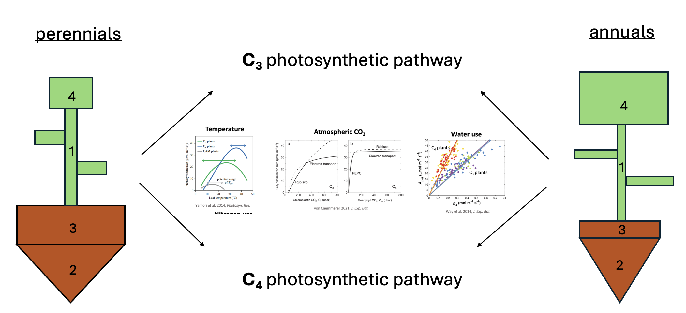
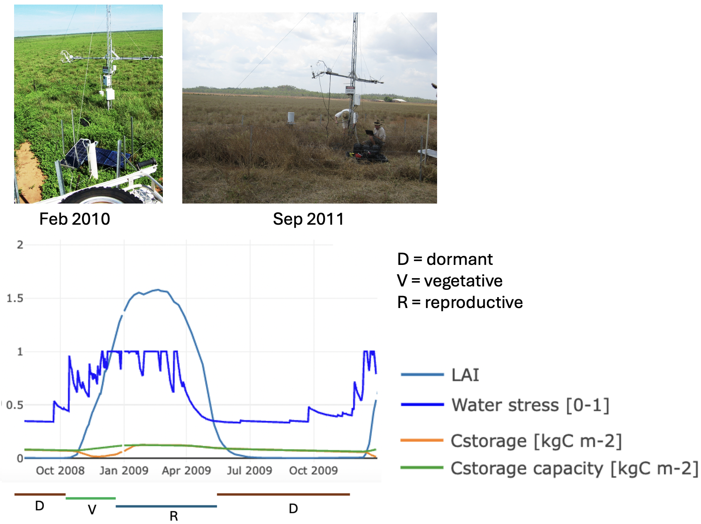

Daily Grass Growth
General model structure
In the following, we present the DAVE-Grass model. The version presented here ([commit hashtag]{.mark}) is embedded into the LPJ-GUESS dynamic vegetation model (refs). The model is highly modular and as such can be readily transferred to any other land surface or dynamic vegetation model.
The model can be applied at the site level (e.g. at eddy covariance or phenocam locations), as well as in gridded simulations that cover larger areas, including continental and global scales. In all cases, the spatial heterogeneity of the unit of interest (whether a site or grid cell) is represented by patches (usually n > 20) that vary based on the time since the last disturbance. In each patch, herbaceous plant functional types (PFTs) are represented by a single 'average' individual, which means that different age classes are not distinguished. Therefore, spatial heterogeneity is captured exclusively through the representation of patches, with the final output for a site or grid cell calculated as the average across patches.
DAVE-Grass simulates biogeochemical processes (e.g. growth, storage dynamics, allocation, N cycling) as well as demographic processes (e.g. establishment, competition) at the daily time scale but uses sub-daily time steps (usually half-hourly to 3-hourly) for 'fast processes' such as photosynthesis and available radiation.
Plant functional types
The model distinguishes four herbaceous plant functional types according to their life cycle and photosynthetic pathway: \(C_3\) perennial herbaceous, \(C_3\) annual herbaceous, \(C_4\) perennial herbaceous, and \(C_4\) annual herbaceous. The PFTs differ in various key traits (e.g. SLA, N:C ratios, allocation fraction to reproductive tissues) as well as functional behaviour (e.g. higher senescence in annuals compared to perennials, temperature responses).

[Fig. 1:]{.mark} diagram showing PFTs and their most important differences + all structural and non-structural pools.
Plant structure
The model represents four structural carbon pools in the plant: shoots, roots, crowns, and reproductive tissues, and one non-structural (storage) pool (Figure XX). All carbon pools are in \(kg C m^{-2}\).
Shoots are divided into culm and leaf components according to a culm fraction parameter \(p_{culm}\).
Green leaf area index (LAI) is then calculated as:
where SLA is specific leaf area (\(m^2\) kg\(^{-1}\) C) and SCA is specific culm area (\(m^2\) kg\(^{-1}\) C). Parameters \(p_{culm}\), SLA, and SCA are assumed constant over the course of the developmental cycle but differ among PFTs (see Table X). [Justify.]{.mark}
The crown constitutes the interface between above-ground and below-ground components and is located partly above- and belowground, but for simplicity is assumed to be located belowground in the model (Fig. 1).
The storage pool (\(C_{storage}\)) represents non-structural carbohydrate (NSC) reserves in the plant, including glucose, sucrose, starch, and other carbohydrates of varying complexity (ref). This pool does not have an explicit location within the plant, but its maximum capacity (\(C_{storage,max}\)) depends on the individual pool sizes as follows:
where \(p_{storage1}\) and \(p_{storage2}\) represent the maximum fraction of NSCs relative to structural C of the pools where it is located in (shoots and roots for \(p_{storage1}\), and crown for \(p_{storage2}\)). Eq. (6) assumes that 1) the overall size of the NSC pool in the plant depends on the size of the plant, and 2) that most of the NSCs are typically stored in crowns, with smaller concentrations also found in roots and leaves (refs).
For shoots, the senescence of \(C_{shoot}\) into a brown shoot pool (\(C_{shoot,brown}\)) is tracked. The green pool represents physiologically active shoot components (leaves and culms) and the brown pool represents physiologically inactive and fully senesced (standing dead) components. Brown LAI can be calculated from Eq. (5) using brown instead of green C pools. Brown components of other structural C pools are not tracked.

[Fig. 2:]{.mark} Illustrative figure showing the three phenological phases, LAI, NSC content.
Radiation transfer and leaf-to-canopy scaling
The canopy is assumed horizontally homogenous and discretised along LAI, each layer having a prescribed depth of LAI (0.5 by default). The model assumes radiation transfer within the canopy according to the Beer-Lambert law (ref). The incident PAR \(I_{inc}\) (\(W m^{-2}\)) in the middle of layer \(i\) is given by:
where \(k\) is the canopy light extinction coefficient, \(I_0\) is the PAR above the canopy (\(W m^{-2}\)), and \(L\) is the cumulative leaf area (summed across all PFTs) at the middle of layer \(i\).
Light competition among herbaceous PFTs is accounted for by the distribution of LAI across the layers. Here we assume that PFTs have their leaf area distributed equally across all layers.
We assume the following distribution of N within the canopy:
where \(rN_{i}\) is the N content of layer \(i\) relative to the top of the canopy, and \(k_{n}\) is the canopy N extinction coefficient (Hikosaka et al., 2016).
Photosynthesis and stomatal conductance
Photosynthesis is modelled according to Farquhar et al. (1980) for \(C_3\) plants and von Caemmerer (2000) for \(C_4\) plants. Detailed Equations and parameter values are given in Appendix A. Stomatal conductance for water vapour (\(g_{sw}\)) is modelled according to Lombardozzi et al. (2017) and Duursma et al. (2019), based on the Medlyn et al. (2011) model for both \(C_3\) and \(C_4\) plants:
where \(g_{min}\) is the minimum stomatal conductance (\(\text{mol m}^{-2} \text{s}^{-1}\)), \(g_0\) is the stomatal conductance at night under unstressed conditions (\(\text{mol m}^{-2} \text{s}^{-1}\)), \(g_1\) is the stomatal slope parameter (kPa^0.5^), \(A_n\) is net photosynthesis, D is vapour pressure deficit at the leaf surface (kPa), and \(C_a\) is \(CO_2\) concentration at the leaf surface (\(\text{mol mol}^{-1}\)). [Describe advantages of this formulation compared to original one.]{.mark}
Respiration
Plant (autotrophic) respiration is given as the sum of maintenance respiration (\(R_{m}\)) and growth respiration (\(R_{g}\)). \(R_{m}\) is calculated individually for different plant pools and for a given pool x is given by:
Where \(k_{rm}\) is a respiration coefficient, \(C_{x}\) is the carbon mass of plant pool x (\(\text{kg C m}^{-2}\)), \(\chi_{x}^{C:N}\) is the C:N ratio of pool x, and \(T\) is the driving temperature for respiration (\(T_{air}\) for the reproductive pool and \(T_{soil}\) for all other pools). Note that \(R_{m,shoot}\) is calculated as part of the photosynthesis routine (Eq. AX).
Growth respiration (\(R_{g}\)) is calculated on a whole-plant basis as ([ref]{.mark}):
Daily net primary production (NPP, \(\text{kg C m}^{-2} \text{d}^{-1}\)) is given by:
Growth
Source strength
Source strength (\(\text{kg C m}^{-2} \text{d}^{-1}\)) is here defined as the external C input (i.e. net primary productivity, NPP) plus the amount of C that can be provided internally from \(C_{storage}\):
where \(r_{mobil,max}\) (d^-1^) represents the maximum mobilisation rate of the storage pool and \(p_{reserve}\) represents the fraction of \(C_{storage}\) that is unavailable for growth and kept as a reserve.
Sink strength
Sink strength is here defined as the demand for growth (\(\text{kg C m}^{-2} \text{d}^{-1}\)) and is calculated as:
where \(RGR_{pot}\) is the potential relative growth rate of the plant (\(\text{kg C kg}^{-1} \text{C d}^{-1}\)), \(f_{dev,growth}\) describes developmental effects on sink strength, \(f_{temp,growth}\) describes the temperature dependence of processes related to growth, and \(f_{water,growth}\) represents the inhibition of growth under water stress. The effects of photoperiod on developmental and growth processes (e.g. Hay, 1990) are not considered in the current model version but may be included in the future development of the model.
The decreasing growth demand throughout the reproductive phase of the plant is here simulated depending on the fraction of reproductive biomass to shoot biomass:
Where \(d_{1}\) and \(d_{2}\) are seasonality parameters determining the timing of growth demand in the reproductive period, and \(a_{repr}\) is the allocation fraction to the reproductive pool.
Sink strength is further affected by environmental conditions, foremost temperature and water stress. The temperature response of growth and other developmental processes (e.g. germination) follows the one presented in Parent & Tardieu (2012):
where \(A\) is a scaling coefficient which is here further modified to scale \(f_{temp,growth}\) between 0 and 1, with 1 being reached at the optimum temperature for growth (\(T_{opt}\)). \(T_{leaf}\) is the average daily leaf temperature (K), \(H_{a}\) is the activation energy (\(\text{J mol}^{-1}\)), \(R_{gas}\) is the universal gas constant (8.314 \(\text{J mol}^{-1} \text{K}^{-1}\)), α is a dimensionless parameter determining the sharpness of the decrease at high temperatures, and \(T_{0}\) (K) is a parameter affecting the value of \(T_{opt}\). \(k_{g}\) is a modifier that accounts for the fact that Eq. (16) does not hold under low temperatures close to or below \(T_{dorm}\). \(k_{g}\) is defined as:
$$ k_g = \begin{cases} 1 & \text{if } T_{leaf} \geq T_{dorm} \ 1 - \min(1, (T_{dorm} - T_{leaf}) \times 0.5) & \text{if } T_{leaf} < T_{dorm} \end{cases}
\tag{17} $$
Eq. (17) represents a relatively sudden decrease of growth below \(T_{dorm}\). Such a threshold behaviour is [often]{.mark} observed in temperature response curves of growth (Körner, 2008).
As noted in Parent & Tardieu (2012), Eq. (16) integrates multiple processes rather than individual enzyme activities, resulting in parameters losing their biochemical interpretation. Therefore, Eq. (16) was preferred over a modified Arrhenius equation for the representation of temperature effects on growth and developmental processes.
Growth demand is further modified by a water stress scalar which assumed to by a sigmoidal function of available soil water content:
where \(w_{scal}\) is a water availability scalar describing the available soil water content in the rooting zone (see Appendix B). \(w_{scal}\) ranges from 0 to 1, where 0 represents the wilting point (i.e. maximum water stress) and 1 field capacity (absence of water stress).
Growth Rate
The actual growth rate \(G\) (\(\text{kg C m}^{-2} \text{d}^{-1}\)) is given by the minimum of the source strength and the sink strength:
If \(G = G_{source}\) (i.e. \(G_{source} < G_{sink}\)), plants are considered source-limited, in which case C is actively drawn from storage to support growth. [Double check: only in this case?]{.mark} If \(G = G_{sink}\) (i.e. \(G_{sink} < G_{source}\)), plants are considered sink limited and tend to replenish their carbon storage.
Source-sink feedbacks
Various molecular feedback mechanisms exist in plants that ensure a balance between sink and source processes (A. C. White et al., 2016). The model represents two main feedback mechanisms between sink and source strength, which are both mediated by the size of the \(C_{storage}\) pool.
Under source-limited conditions, such as in the early vegetative phase, C is usually drawn from storage. The following negative feedback prevents \(C_{storage}\) from a complete depletion which would put the plant at risk of carbon starvation:
Where \(p_{Cstorage}\) represents the fraction of \(C_{storage}\) that is available for growth relative to the capacity of the \(C_{storage}\) pool (\(C_{storage,max}\)) and \(q_{f}\) is a parameter determining the strength of the feedback (Table X). \(p_{Cstorage}\) is calculated as:
\(f_{storage,feedback}\) is directly applied to \(G_{sink}\) (Eq. (14)) and serves to reduce growth demand when storage approaches depletion. The \(q_{f}\) parameter is assumed to be higher in the reproductive compared to the vegetative phase, representing a more conservative behaviour with respect to storage utilisation in the late growing season (refs).
Under sink-limited conditions, such as often observed in the reproductive phase, NSCs will accumulate in the plant until the physical capacity of the storage pool (\(C_{storage,max}\), Eq. (6)) is reached. If \(C_{storage}\) approaches \(C_{storage,max}\), a negative feedback on photosynthetic capacity is invoked as follows:
where \(q_{ps,lim}\) is a downregulation factor applied to parameters of photosynthetic capacity, \(q_{ps,lim_{t-1}}\) is its value at the previous time step, and \(d_{ps,lim}\) is the maximum change of \(q_{ps,lim}\) per time step. As apparent in Eq. (6), photosynthetic activity is upregulated again when \(p_{Cstorage}\) falls below a certain value depending on \(q_{f2}\).
Fate of 'excess carbon'
Eq. (22) reduces photosynthetic capacity and thus \(G_{source}\) in the following day but it does not always prevent \(C_{storage}\) from exceeding \(C_{storage,max}\). In that case, the 'excess carbon' (\(C_{excess}\)) that cannot be placed into \(C_{storage}\) must be either allocated to structural plant pools or discarded through other pathways. In the current version of the model, a limited fraction of \(C_{excess}\) is first allocated to \(C_{repr}\) if the plant is in the reproductive phase in both annuals and perennials. In perennials, a limited fraction of the remaining \(C_{excess}\) is additionally allocated to crowns. Any \(C_{excess}\) that cannot be allocated to structural pools, either due to potential excessive growth or stoichiometric constraints, is respired. Other potential pathways of \(C_{excess}\), such as root exudation fluxes, may be accounted for in future model developments.
Carbon allocation
Carbon from growth is allocated to the four structural pools so that growth of pool x can be expressed as:
where \(a_{x}\) represents the C allocation fraction to pool x.
A constant, PFT-specific fraction of \(G\) (\(a_{crown}\)) is first allocated to the crown. The rationale is that the crown as the interface between above- and belowground components supports growth of any other plant pool and thus needs to grow along with overall growth of the plant.
The allocation fraction to reproductive tissues (\(a_{repr}\)) is zero in the vegetative phase and a constant, PFT-specific fraction in the reproductive phase (Table XX). The remaining \(G\) is then allocated to shoots and roots depending on water and nitrogen stress. We adopted a similar formulation as presented in Johnson (2016) to determine the allocation fraction to shoots:
where \(a_{shoot,max}\) is the maximum allocation fraction to shoots and \(n_{scal}\) and \(w_{scal}\) are scalars describing nitrogen and water stress, respectively. Both factors range from 0-1 where 0 indicates maximum stress and 1 represents unstressed conditions. Finally, \(a_{root}\) is given by:
In annual plants*, \(a_{crown}\) is set to 0 in the reproductive stage. In perennial plants younger than one year, \(a_{crown}\) is multiplied by 2 and \(a_{repr}\) is reduced accordingly. These adjustments reflect the prioritisation of vegetative growth over reproductive growth in young perennials (Cheplick, 2021; Pitelka, 1977).
Phenology
DAVE-Grass distinguishes three phenological stages: vegetative, reproductive, and dormant. All three stages are reached in response to external or internal cues (Figure XX). The transition from one stage to another does not follow a prescribed (thermal) time and may vary depending on the conditions each year. For example, plants may remain dormant or stay in the vegetative phase if the conditions are unfavourable for plant growth. Dormancy may be absent completely in climates without significant seasonal temperature or water limitations.
Dormancy
Dormancy is characterised by reduced metabolic activity in response to prolonged periods of unfavourable environmental conditions (e.g. Gillespie & Volaire, 2017). In the model, dormancy is triggered by either low temperatures or low soil moisture contents in the rooting zone and represented as a metabolic downregulation function (\(f_{dorm}\)):
where \(p_{dorm,min}\) represents a baseline level of metabolic activity at full dormancy (i.e. the minimum value of \(f_{dorm}\)), which is assumed to be 0.1 here according to respiration rates in full dormancy relative to the vegetative phase in different plant tissues (Myking, 1998; Shane et al., 2009). \(d_{dorm,max}\) is the maximum change of \(f_{dorm}\) per day, and \(f_{temp,dorm}\) and \(f_{water,dorm}\) are functions (ranging from 0 to 1) controlling dormancy based on temperature and water availability, respectively. Eq. (26) demonstrates that dormancy is represented as a continuum with varying levels of metabolic activities, rather than an 'on -- off' switch. This representation allows for partial dormancy as often observed in grasses and other herbaceous plants (ref). For many subsequent applications, it is useful to rescale \(f_{dorm}\) and express it as 'dormancy depth' (\(q_{dorm}\)) ranging from 0 (non-dormant) to 1 (fully dormant):
In the model, plants change their dormancy depth according to the temperature of the first soil layer averaged over a certain preceding time window, here assumed to be 10 days (\(\overline{T_{soil1,t - 9:t}}\)). Specifically, plants enter dormancy if the average \(T_{soil1}\) falls below a critical dormancy temperature (\(T_{dorm}\)) and release dormancy (or remain non-dormant) if the average \(T_{soil1}\) is greater than \(T_{dorm}\):
where \(f_{temp,growth}(\overline{T_{soil1,t - 9:t}})\) is the temperature response function for growth as given by Eq. (16) but with \(\overline{T_{soil1,t - 9:t}}\) as the driving temperature.
Similarly, plants change their dormancy status depending on the available soil water in the rooting zone (\(w_{scal}\), Eq. (B2)). We assume that plants fall dormant when \(w_{scal}\) falls below a critical threshold for dormancy (\(w_{scal,dorm}\)).
where \(w_{scal,dorm}\) is the fraction of available water content below which plants fall dormant. The exponent \(q_{water,dorm}\) is here set to 1.5. This behaviour mirrors a more cautious approach of plants of not resuming metabolic activities too quickly after a small rain event.
The primary effects of dormancy are reduced metabolic activity, reduced or ceased growth, and increased senescence rates (Gillespie & Volaire, 2017; Volaire & Norton, 2006). In the model, these effects are captured by applying \(f_{dorm}\) as a scaling factor to photosynthetic and respiration parameters, and \(q_{dorm}\) to senescence (Eq. XX), and growth (Eq. XX).
Vegetative and Reproductive Phase
Plants transition from the dormant phase to the vegetative phase when conditions improve, i.e. when \(f_{dorm}\) exceeds \(p_{dorm,min}\) (Eq. (26)). The reproductive phase is reached when the following conditions are met: 1) a positive internal carbon balance (i.e. positive trend in \(C_{storage}\)) over the preceding 15 days, 2) \(C_{storage}\) at least 70% full. The transition from vegetative to reproductive growth is accompanied by a range of physiological changes in herbaceous plants characterised by 1) C allocation to reproductive tissues, 2) decreasing overall growth rates (Jungers et al., 2018; Koelewijn, 2004), and 3) increasing senescence rates (Noodén et al., 1997; Yang & Udvardi, 2018). These effects are accounted for in the model as described in full detail in the sections below.
The reproductive phase ends either when plants enter full dormancy (i.e. \(q_{dorm} = 1\)) or when the relative daily increase in \(C_{repr}\) approaches 0. In the latter case, plants are assumed to re-enter the vegetative phase, starting with a reduced \(f_{dev,growth}\) equal to XX. and is subsequently increased according to conditions (using Eq. XX). This reduction in growth demand is needed to avoid rapid growth right after the end of the reproductive period.
Shoot Senescence
The model tracks the flow of C from the green shoot pool (\(C_{shoot}\)) to the brown shoot pool (\(C_{shoot,brown}\)), a process known as senescence (\(k_{senesc}\)):
Where \(k_{shoot,brown}\) is the turnover rate from the brown shoot pool to litter which is described in the next section. The senescence rate depends on the environmental conditions and the growth stage of the plant and is higher in the reproductive and dormant phases compared to the vegetative phase. The shoot senescence rate on any given day is calculated as:
where \(k_{senesc,base}\) is the base rate of senescence under unstressed conditions (Table 1), \(f_{dev,senesc}\) describes plant developmental effects on senescence, \(f_{dorm,senesc}\) represents the effects of dormancy and \(f_{water,senesc}\) and \(f_{temp,senesc}\) describe the effects of soil water stress and temperature on senescence, respectively. Other potential mechanisms explaining senescence, such as light and nutrient limitations (Yang & Udvardi, 2018), are not considered in the current model version.
We assume that shoot senescence is linked to the decrease in growth demand during the reproductive phase (Eq. (15) as follows:
where \(s_{dev,senesc}\) is a scaling factor determining the maximum senescence rate caused by developmental effects. The exponent \(q_{dev,senesc}\) determines the rate of increase in senescence during the reproductive and dormant phase.
Dormancy is another mechanism associated with increasing senescence rates (Gillespie & Volaire, 2017; Volaire & Norton, 2006). This phenomenon is represented here through the following formulation:
where \(s_{dorm,senesc}\) is a scaling factor representing the maximum increase in senescence rate under full dormancy, and \(q_{dorm}\) is the degree of dormancy (0-1) as given by Eq. (XX). Thus, \(f_{dorm,senesc}\) may take values > 0 as soon as dormancy starts to develop, not just in the dormant phase.
Water stress increases shoot senescence as follows:
where \(s_{water,senesc}\) is a scaling factor representing the maximum increase in senescence rate under soil water stress and \(q_{water,senesc}\) is an exponent determining the shape of the response. Lastly, a linear temperature dependence is added similar to Johnson & Thornley (1983), but additionally assuming increasing senescence rates under freezing temperatures (Jouven et al., 2006):
where \(b_{senesc1}\) and \(b_{senesc2}\) are the sensitivities of the senescence rate to \(T_{air}\) (°C) below 0°C and above \(T_{dorm}\), respectively.
Plant turnover
The turnover rate of the brown shoot pool (\(C_{pool,brown}\)) into the shoot litter pool is simulated as follows:
where \(k_{shoot,base}\) is the baseline decomposition rate at 10 °C, \(f_{temp,decomp}\) and \(f_{water,decomp}\) describe the temperature and soil moisture dependence functions of litter decomposition. The temperature dependence is given by Lloyd & Taylor (1994):
We use \(T_{air}\) as driving temperature in Eq. (37), but note that \(T_{soil1}\) could also be a meaningful alternative for the decomposition of biomass close to the ground. The soil moisture response is given by the following logistic function (Parton et al., 2000):
where \(w_{cont1}\) (Eq. (B1) is the relative soil moisture of the uppermost soil layer.
Root turnover rate (\(k_{root}\)) is assumed to be proportional to shoot base turnover rate (\(k_{senesc,base}\), Eq. (31) but follows different environmental dependencies:
where \(r_{k,root:shoot}\) is the ratio of root base turnover rate to shoot base turnover rate.
Crown turnover (\(k_{crown}\)) is assumed to be proportional to \(k_{root}\):
where \(r_{k,crown:root}\) is the ratio of crown base turnover rate to root base turnover rate.
As in the LPJ-GUESS model, the C that is turned over is transferred to litter pools (\(C_{shoot,brown}\) to \(C_{litter,shoot}\), and \(C_{root}\) and \(C_{crown}\) to \(C_{litter,root}\)), which partly respire and partly turn over into various soil pools. For a detailed description on soil and litter C decomposition, see REF.
Mortality
In the current model version, carbon starvation is the sole mechanism of plant mortality. That means that an individual dies when its carbon storage (\(C_{storage}\)) reaches zero. Carbon starvation is here considered as a representative mechanism for plant mortality as \(C_{storage}\) integrates the effects of a range of external factors (climate, nutrient availability) along with plant characteristics (size, storage capacity, competitiveness, etc.). Thus, mortality caused by low \(C_{storage}\) is assumed to integrate a range of causes linked to various stress factors.
After mortality occurred, C and N from different plant pools are transferred to the respective litter pools. The PFT may persist through its seedbank and re-establish if conditions if conditions become favourable.
Seedbank
At the end of the reproductive period, a fraction of \(C_{repr}\) enters the reproductive litter pool (\(C_{litter,repr}\)), which represents the seedbank of the PFT. \(C_{litter,repr}\) is also continuously turned over according to the seed turnover rate \(k_{litter,repr}\). The change of C in the seedbank is thus given by:
where \(p_{seed}\) represents the fraction of \(C_{repr}\) that is composed of viable seeds and \(k_{repr}\) represents the fraction of \(C_{repr}\) being flushed to litter. For simplicity, \(k_{repr}\) takes a value of 1 on the last day of the reproductive phase and 0 on all other days, which means that all seeds are shed on a single day.
The seedbank turnover rate \(k_{litter,repr}\) depends on the moisture and temperature of the first soil layer in the same way as \(k_{shoot,brown}\) (Eq. (36), but with a different baseline turnover rate. The environmental dependencies of turnover (Eq. (36) allow seeds to stay viable for longer under dry and cool conditions. The remainder of \(C_{repr}\), (i.e. (1 -- \(p_{seed}\)) * \(C_{repr}\)) represents supporting structures such as shafts and bracts, which are added to the shoot litter pool (\(C_{litter,shoot}\)) after seed shedding.
Germination
Germination of PFTs present in the patch is simulated through a germination function which simulates a daily germination rate (\(p_{germ}\)) depending on the environmental conditions:
where \(p_{germ,max}\) is the maximum fraction of \(C_{litter,repr}\) that can germinate on any single day (here set to 0.3), and \(f_{temp,germ}\) and \(f_{water,germ}\) are functions describing the effects of temperature and water on the germination rate, respectively. \(f_{temp,growth}\) is given by Eq. (16) with \(T_{leaf}\) replaced by \(\overline{T_{soil1,t - 4:t}}\), the temperature of the uppermost soil layer averaged over the preceding 5 days. Eq. (16) was derived for developmental processes, including growth and germination (Parent & Tardieu, 2012) and is therefore applied to both processes. \(f_{water,germ}\) is given by Eq. (18) but with \(w_{scal}\) replaced by the soil moisture of the uppermost soil layer averaged over the preceding 5 days (\(\overline{w_{cont1,t - 4:t}}\), Eq. (B1). \(T_{soil,1}\) and \(w_{cont1}\) are averaged over the preceding 5 days to represent the conditions experienced during the entire seed germination process.
Establishment
On the day of germination, the C in the germinated seed fraction (\(C_{init}\), \(\text{kg C m}^{-2}\)) is distributed across different plant pools to meet the following conditions:
N in the germinated seed fraction is allocated so that the C:N ratio of the young plant matches that of the seedbank. A plant individual is considered established if LAI exceeds a minimum LAI value (\(LAI_{min}\)) at the transition from the vegetative to the reproductive stage. If individuals do not reach \(LAI_{min}\) by the reproductive switch, establishment is considered as failed, and C is converted to its respective litter components.
[The above case is for newly germinated indivs. Describe what happens when there is already an indiv of that PFT and germination occurs.]{.mark} [This should be linked to a simple formulation of seed dormancy.]{.mark}
Seed dispersal
A simple seed dispersal routine is implemented that allows for the establishment of PFTs in areas where they did not occur previously. The model keeps track of a hypothetical external seedbank (\(C_{litter,repr,ext}\)) for all non-established PFTs:
where \(d_{repr,ext}\) (\(\text{kg C m}^{-2} \text{d}^{-1}\)) represents an external seed input that integrates all seed dispersal processes (anthropogenic and natural), and \(k_{litter,repr}\) is the same seedbank turnover rate as in Eq. (41). \(C_{litter,repr,ext}\) remains hypothetical (i.e. it does not interfere with the C and N cycles of the ecosystem) until an external PFT is successfully established (see previous section). In that case, the newly established individuals of the new PFT compete with existing PFTs and are fully coupled to biogeochemical cycling.
[Describe special cases for establishment (seed dormancy, avoiding low relative and absolute germination rates).]{.mark}
N cycling
The model considers all relevant N processes and all plant, litter, and soil pools represent an N and C component, which are linked through stoichiometric ratios.
N storage (capacity)
Based on C storage capacity but not checked for stoichiometry! I.e. plants can have empty C but full N in theory as the two are not necessarily co-located. Need to be careful that the overall plant C:N is not too awkward as a consequence of this assumption.
Edge case: what happens if N storage overflows?
N retranslocation
During shoot senescence and turnover of roots and crowns, a fraction of the N in these pools is retranslocated to the N storage pool of the plant:
Stoichiometry and Growth
-
Describe assumption on stoichiometry of different pools C:Nmin and C:Nmax of leaves, roots, crown, repr. Assumption that repr is within the range of all other pools to not cause problems during germination/establishment.
-
N demand: how much N would the plant like to take up given growth?
-
Describe what happens if there is not enough N to support growth. Link this to the growth equations above.
-
N is allocated either to new growth or to existing pools to nudge C:N towards their minimum value (i.e. maximum N:C). Describe how this is done and to what extent new growth is prioritised over existing biomass.
-
Growth demand feedback with N storage.
N uptake
- N uptake of the plant as a function of N competition with other PFTs and available soil N.
Calculation of N stress factor
-
Used in allocation functions
-
Could be used for senescence as well.
Parameters
| Parameter | Description | Unit | Equation | C3P | C3A | C4P | C4A | References |
|---|---|---|---|---|---|---|---|---|
| \(a_{crown}\) | C allocation fraction to crown pool | - | 0.2 | 0.02 | 0.2 | 0.02 | ||
| \(a_{repr}\) | C allocation fraction to reproduction pool | - | 0.2 | 0.6 | 0.2 | 0.6 | ||
| \(a_{shoot,max}\) | Maximum leaf allocation fraction | - | 3 | 3 | 3 | 3 | ||
| \(b_1\) | Steepness parameter in water stress response of growth | - | 0.08 | 0.08 | 0.08 | 0.08 | ||
| \(b_{senesc1}\) | Rate of senescence increase under freezing temperatures | \(\text{deg C}^{-1}\) | 1.0 | 1.0 | 1.0 | 1.0 | Jouven et al. (2006) | |
| \(b_{senesc2}\) | Rate of senescence increase above dormancy temperature | \(\text{deg C}^{-1}\) | 0.05 | 0.05 | 0.05 | 0.05 | Johnson & Thornley (1983) | |
| \(d_{dorm,max}\) | Maximum rate of metabolic up-/down regulation in and out of dormancy | \(\text{d}^{-1}\) | 0.3 | - | 0.3 | - | calibrated | |
| \(k\) | Canopy light extinction coefficient | - | 0.5 | 0.5 | 0.5 | 0.5 | ||
| \(k_n\) | Canopy nitrogen extinction coefficient | - | 0.17 | 0.23 | 0.17 | 0.23 | (Hikosaka et al., 2016) | |
| \(k_{senesc,base}\) | Baseline shoot senescence rate | \(\text{d}^{-1}\) | 0.0002 | 0.0002 | 0.0002 | 0.0002 | calibrated | |
| \(k_{shoot,base}\) | Baseline turnover rate for brown shoots | \(\text{d}^{-1}\) | calibrated | |||||
| \(LAI_{min}\) | Minimum LAI value | \(\text{m}^{2} \text{m}^{-2}\) | 0.02 | 0.02 | 0.02 | 0.02 | ||
| \(p_{culm}\) | Fraction of \(C_{shoot}\) made up by culms | - | 0.5 | 0.5 | ||||
| \(p_{seed}\) | Fraction of \(C_{repr}\) composed of viable seeds | - | 0.5 | 0.5 | 0.5 | 0.5 | ||
| \(p_{germ,max}\) | Maximum fraction of seedbank available for germination | \(\text{d}^{-1}\) | 0.3 | 0.3 | 0.3 | 0.3 | ||
| \(p_{reserve}\) | Fraction of \(C_{storage,max}\) unavailable for growth | - | 0.15 | 0.15 | 0.15 | 0.15 | ||
| \(p_{storage1}\) | Maximum fraction of structural pool consisting of storage (crown) | - | 0.3 | 0.3 | 0.3 | 0.3 | ||
| \(p_{storage2}\) | Maximum fraction of structural pool consisting of storage (shoots and roots) | 0.75 | 0.75 | 0.75 | 0.75 | |||
| \(q_{dev,senesc}\) | Exponent in developmental effects on senescence rate | 5.0 | 20.0 | 5.0 | 20.0 | |||
| \(q_{temp,dorm}\) | Exponent in temperature control of dormancy | 0.5 | 0.5 | 0.5 | 0.5 | |||
| \(q_{water,dorm}\) | ||||||||
| \(q_{water,senesc}\) | Exponent in water stress response of senescence rate | 1.0 | 2.0 | 1.0 | 2.0 | |||
| \(q_{f1}\) | Feedback strength parameter for sink-source feedback | - | veg: 0.1; repr: f(fdevgrowth) | |||||
| \(q_{f2}\) | Feedback strength parameter for source-sink feedback | - | 100 | 100 | 100 | 100 | ||
| \(p_{dorm,min}\) | Minimum metabolic activity during dormancy | - | 0.1 | 0.1 | 0.1 | 0.1 | ||
| \(RGR_{pot}\) | Potential relative growth rate | \(\text{kg C kg C}^{-1} \text{d}^{-1}\) | 0.2 | 0.3 | 0.2 | 0.3 | ||
| \(r_{mobil,max}\) | Maximum mobilisation rate of C in and out of \(C_{storage}\) pool | \(\text{d}^{-1}\) | 0.2 | 0.2 | 0.2 | 0.2 | ||
| \(r_{k,root:shoot}\) | Ratio of root base turnover rate to shoot base turnover rate | - | 20 | 20 | 20 | 20 | calibrated | |
| \(r_{k,crown:root}\) | Ratio of crown turnover rate to root turnover rate | - | 0.35 | 0.35 | 0.35 | 0.35 | calibrated | |
| \(s_{dev,senesc}\) | Scaling factor for developmental effects on shoot senescence | - | 40 | 40 | 40 | 40 | ||
| \(s_{dorm,senesc}\) | Scaling factor for dormancy effects on shoot senescence | - | 100 | 100 | 100 | 100 | ||
| \(s_{water,senesc}\) | Scaling factor for soil water effects on shoot senescence | - | 60 | 60 | 60 | 60 | ||
| SLA | Specific leaf area | [check]{.mark} | ||||||
| \(T_{dorm}\) | Dormancy temperature | [deg C]{.mark} | 5 | 5 | 13 | 13 | ||
| \(w_{scal0}\) | Inflection point water stress response of growth | - | 0.75 | 0.75 | 0.75 | 0.75 | ||
| \(w_{scal,dorm}\) | Critical relative soil water content in the rooting zone for dormancy | - | 0.4 | 0.4 | 0.4 | 0.4 | ||
| : Table 1: Parameters and their description. |
Split table in 2? One with global parameters, another with PFT-specific parameters?
References
Ahlström, A., Raupach, M. R., Schurgers, G., Smith, B., Arneth, A., Jung, M., et al. (2015). The dominant role of semi-arid ecosystems in the trend and variability of the land CO2 sink. Science, 348(6237), 895--899. https://doi.org/10.1126/science.aaa1668
Barrett, P. D., Laidlaw, A. S., & Mayne, C. S. (2005). GrazeGro: a European herbage growth model to predict pasture production in perennial ryegrass swards for decision support. European Journal of Agronomy, 23(1), 37--56. https://doi.org/10.1016/j.eja.2004.09.006
von Caemmerer, S. (2000). Biochemical models of leaf photosynthesis. CSIRO Publishing.
von Caemmerer, S. (2013). Steady-state models of photosynthesis. Plant, Cell & Environment, 36(9), 1617--1630.
von Caemmerer, S. (2021). Updating the steady-state model of C4 photosynthesis. Journal of Experimental Botany, 72(17), 6003--6017. https://doi.org/10.1093/jxb/erab266
von Caemmerer, S., & Furbank, R. T. (1999). Modeling C4 photosynthesis. In R. F. Sage & R. K. Monson (Eds.), C4 Plant Biology (pp. 173--211). Academic Press Toronto, ON, Canada.
Cheplick, G. P. (2021). Fitness components and the determinants of fecundity in populations of a native perennial grass (). Plant Species Biology, 36(2), 322--337. https://doi.org/10.1111/1442-1984.12318
Collatz, G. J., Ball, J. T., Grivet, C., & Berry, J. A. (1991). Physiological and environmental regulation of stomatal conductance, photosynthesis and transpiration: a model that includes a laminar boundary layer. Agricultural and Forest Meteorology, 54(2), 107--136.
De Kauwe, M. G., Medlyn, B. E., Walker, A. P., Zaehle, S., Asao, S., Guenet, B., et al. (2017). Challenging terrestrial biosphere models with data from the long-term multifactor Prairie Heating and CO₂ Enrichment experiment. Global Change Biology, 23(9), 3623--3645. https://doi.org/10.1111/gcb.13643
Duursma, R. A., Blackman, C. J., Lopéz, R., Martin-StPaul, N. K., Cochard, H., & Medlyn, B. E. (2019). On the minimum leaf conductance: its role in models of plant water use, and ecological and environmental controls. New Phytologist, 221(2), 693--705.
Ellsworth, D. S., Crous, K. Y., De Kauwe, M. G., Verryckt, L. T., Goll, D., Zaehle, S., et al. (2022). Convergence in phosphorus constraints to photosynthesis in forests around the world. Nature Communications, 13(1), 5005. https://doi.org/10.1038/s41467-022-32545-0
Farquhar, G. D., von Caemmerer, S. von, & Berry, J. A. (1980). A biochemical model of photosynthetic \(CO_2\) assimilation in leaves of C3 species. Planta, 149(1), 78--90.
Gillespie, L. M., & Volaire, F. A. (2017). Are winter and summer dormancy symmetrical seasonal adaptive strategies? The case of temperate herbaceous perennials. Annals of Botany, 119(3), 311--323. https://doi.org/10.1093/aob/mcw264
Harley, P. C., & Sharkey, T. D. (1991). An improved model of C3 photosynthesis at high CO₂: reversed O₂ sensitivity explained by lack of glycerate reentry into the chloroplast. Photosynthesis Research, 27(3), 169--178.
Hay, R. K. M. (1990). The influence of photoperiod on the dry matter production of grasses and cereals. New Phytologist, 116(2), 233--254. https://doi.org/10.1111/j.1469-8137.1990.tb04711.x
Herrmann, A., & Schachtel, G. A. (2001). OSYAQ, an organ-specific growth model for forage grasses. Grass and Forage Science, 56(3), 268--284. https://doi.org/10.1046/j.1365-2494.2001.00274.x
Heskel, M. A., O'Sullivan, O. S., Reich, P. B., Tjoelker, M. G., Weerasinghe, L. K., Penillard, A., et al. (2016). Convergence in the temperature response of leaf respiration across biomes and plant functional types. Proceedings of the National Academy of Sciences, 113(14), 3832--3837. https://doi.org/10.1073/pnas.1520282113
Hikosaka, K., Anten, N. P. R., Borjigidai, A., Kamiyama, C., Sakai, H., Hasegawa, T., et al. (2016). A meta-analysis of leaf nitrogen distribution within plant canopies. Annals of Botany, 118(2), 239--247. https://doi.org/10.1093/aob/mcw099
Huntingford, C., Atkin, O. K., Martinez-de la Torre, A., Mercado, L. M., Heskel, M. A., Harper, A. B., et al. (2017). Implications of improved representations of plant respiration in a changing climate. Nature Communications, 8(1), 1602. https://doi.org/10.1038/s41467-017-01774-z
Jackson, R. B., Canadell, J., Ehleringer, J. R., Mooney, H. A., Sala, O. E., & Schulze, E. D. (1996). A global analysis of root distributions for terrestrial biomes. Oecologia, 108(3), 389--411. https://doi.org/10.1007/BF00333714
Johnson, F. H., Eyring, H., & Williams, R. (1942). The nature of enzyme inhibitions in bacterial luminescence: sulfanilamide, urethane, temperature and pressure. Journal of Cellular Physiology, 20(3), 247--268.
Johnson, I. R. (2016). DairyMod and the SGS Pasture Model: a mathematical description of the biophysical model structure. (IMJ Consultants). Dorrigo, NSW, Australia.
Johnson, I. R., & Thornley, J. H. M. (1983). Vegetative crop growth model incorporating leaf area expansion and senescence, and applied to grass. Plant, Cell & Environment, 6(9), 721--729. https://doi.org/10.1111/1365-3040.ep11588103_6_9
Jouven, M., Carrère, P., & Baumont, R. (2006). Model predicting dynamics of biomass, structure and digestibility of herbage in managed permanent pastures. 1. Model description. Grass and Forage Science, 61(2), 112--124. https://doi.org/10.1111/j.1365-2494.2006.00515.x
Jungers, J. m., Frahm, C. s., Tautges, N. e., Ehlke, N. j., Wells, M. s., Wyse, D. l., & Sheaffer, C. c. (2018). Growth, development, and biomass partitioning of the perennial grain crop Thinopyrum intermedium. Annals of Applied Biology, 172(3), 346--354. https://doi.org/10.1111/aab.12425
Knapp, A. K., & Smith, M. D. (2001). Variation Among Biomes in Temporal Dynamics of Aboveground Primary Production. Science, 291(5503), 481--484. https://doi.org/10.1126/science.291.5503.481
Koelewijn, H. P. (2004). Rapid change in relative growth rate between the vegetative and reproductive stage of the life cycle in Plantago coronopus. New Phytologist, 163(1), 67--76. https://doi.org/10.1111/j.1469-8137.2004.01078.x
Körner, C. (2008). Winter crop growth at low temperature may hold the answer for alpine treeline formation. Plant Ecology & Diversity, 1(1), 3--11. https://doi.org/10.1080/17550870802273411
Lin, Y.-S., Medlyn, B. E., Duursma, R. A., Prentice, I. C., Wang, H., Baig, S., et al. (2015). Optimal stomatal behaviour around the world. Nature Climate Change, 5, 459--464. https://doi.org/10.1038/nclimate2550
Lloyd, J., & Taylor, J. (1994). On the temperature dependence of soil respiration. Functional Ecology, 8, 315--323.
Lombardozzi, D. L., Zeppel, M. J. B., Fisher, R. A., & Tawfik, A. (2017). Representing nighttime and minimum conductance in CLM4. 5: global hydrology and carbon sensitivity analysis using observational constraints. Geoscientific Model Development, 10(1), 321--321.
Martín Belda, D., Anthoni, P., Wårlind, D., Olin, S., Schurgers, G., Tang, J., et al. (2022). LPJ-GUESS/LSMv1.0: a next-generation land surface model with high ecological realism. Geoscientific Model Development, 15(17), 6709--6745. https://doi.org/10.5194/gmd-15-6709-2022
Medlyn, B. E., Duursma, R. A., Eamus, D., Ellsworth, D. S., Prentice, I. C., Barton, C. V. M., et al. (2011). Reconciling the optimal and empirical approaches to modelling stomatal conductance. Global Change Biology, 17(6), 2134--2144. https://doi.org/10.1111/j.1365-2486.2010.02375.x
Myking, T. (1998). Interrelations between respiration and dormancy in buds of three hardwood species with different chilling requirements for dormancy release. Trees, 12(4), 224--229. https://doi.org/10.1007/s004680050144
Noodén, L. D., Guiamét, J. J., & John, I. (1997). Senescence mechanisms. Physiologia Plantarum, 101(4), 746--753. https://doi.org/10.1111/j.1399-3054.1997.tb01059.x
Parent, B., & Tardieu, F. (2012). Temperature responses of developmental processes have not been affected by breeding in different ecological areas for 17 crop species. New Phytologist, 194(3), 760--774. https://doi.org/10.1111/j.1469-8137.2012.04086.x
Parton, W. J., Morgan, J. A., Kelly, R. H., & Ojima, and D. (2000). Modeling Soil C Responses to Environmental Change in Grassland Systems. In The Potential of U.S. Grazing Lands to Sequester Carbon and Mitigate the Greenhouse Effect. CRC Press.
Pitelka, L. F. (1977). Energy Allocations in Annual and Perennial Lupines (lupinus: Leguminosae). Ecology, 58(5), 1055--1065. https://doi.org/10.2307/1936925
Prentice, I. C., Cramer, W., Harrison, S. P., Leemans, R., Monserud, R. A., & Solomon, A. M. (1992). Special Paper: A Global Biome Model Based on Plant Physiology and Dominance, Soil Properties and Climate. Journal of Biogeography, 19(2), 117--134. https://doi.org/10.2307/2845499
Prentice, I. C., Liang, X., Medlyn, B. E., & Wang, Y.-P. (2015). Reliable, robust and realistic: the three R's of next-generation land-surface modelling. Atmospheric Chemistry and Physics, 15(10), 5987--6005.
Schapendonk, A. H. C. M., Stol, W., van Kraalingen, D. W. G., & Bouman, B. A. M. (1998). LINGRA, a sink/source model to simulate grassland productivity in Europe. European Journal of Agronomy, 9(2), 87--100. https://doi.org/10.1016/S1161-0301(98)00027-6
Shane, M. W., McCully, M. E., Canny, M. J., Pate, J. S., Ngo, H., Mathesius, U., et al. (2009). Summer dormancy and winter growth: root survival strategy in a perennial monocotyledon. New Phytologist, 183(4), 1085--1096. https://doi.org/10.1111/j.1469-8137.2009.02875.x
Volaire, F., & Norton, M. (2006). Summer Dormancy in Perennial Temperate Grasses. Annals of Botany, 98(5), 927--933. https://doi.org/10.1093/aob/mcl195
Wang, Y.-P., & Leuning, R. (1998). A two-leaf model for canopy conductance, photosynthesis and partitioning of available energy I: Model description and comparison with a multi-layered model. Agricultural and Forest Meteorology, 91(1), 89--111.
White, A. C., Rogers, A., Rees, M., & Osborne, C. P. (2016). How can we make plants grow faster? A source--sink perspective on growth rate. Journal of Experimental Botany, 67(1), 31--45. https://doi.org/10.1093/jxb/erv447
White, R., Murray, S., Rohweder, M., Prince, S. D., & Thompson, K. M. (2000). Pilot analysis of global ecosystems: Grassland ecosystems. World Resources Institute. Retrieved from https://www.wri.org/research/pilot-analysis-global-ecosystems-grassland-ecosystems
Yang, J., & Udvardi, M. (2018). Senescence and nitrogen use efficiency in perennial grasses for forage and biofuel production. Journal of Experimental Botany, 69(4), 855--865. https://doi.org/10.1093/jxb/erx241
Yin, X., & Struik, P. C. (2012). Mathematical review of the energy transduction stoichiometries of C4 leaf photosynthesis under limiting light. Plant, Cell & Environment, 35(7), 1299--1312. https://doi.org/10.1111/j.1365-3040.2012.02490.x
Zhou, H., Tang, J., Olin, S., & Miller, P. A. (2024). A comprehensive evaluation of hydrological processes in a second-generation dynamic vegetation model. Hydrological Processes, 38(4), e15152. https://doi.org/10.1002/hyp.15152
Appendix A: Photosynthesis
C3 photosynthesis
Photosynthesis for \(C_3\) plants was implemented following Farquhar et al. (1980):
where net photosynthesis (\(A_{n}\)) is limited by either Rubisco-activity (\(A_{c}\)), RuBP regeneration (\(A_{j}\)), or triose phosphate utilisation (TPU) (\(A_{p}\)). \(R_{d}\) is leaf mitochondrial respiration (Eq. (A12)). \(A_{c}\) is given by:
where \(V_{cmax}\) is the maximum carboxylation rate (mol \(\text{m}^{-2} \text{s}^{-1}\)), \(C_{i}\) is the intercellular \(CO_2\) concentration (mol \(\text{mol}^{-1}\)), \(\Gamma_{*}\) is the chloroplastic \(CO_2\) compensation point in the absence of mitochondrial respiration (mol \(\text{mol}^{-1}\)), \(K_{c}\) and \(K_{o}\) are the Michaelis-Menten constants for \(CO_2\) and \(O_2\) (mol \(\text{mol}^{-1}\)), respectively, and \(O_{i}\) is the intercellular \(O_2\) concentration (mol \(\text{mol}^{-1}\)). RuBP regeneration-limited photosynthesis (\(A_{j}\)) is given by:
where \(J\) is the electron transport rate (\(\text{mol (electrons) m}^{-2} \text{s}^{-1}\)). \(J\) is assumed to follow a hyperbolic light response curve (von Caemmerer, 2013):
where \(J_{\max}\) is the maximum electron transport rate (\(\text{mol (electrons) m}^{-2}\ \text{s}^{-1}\)), \(\theta\) is a curvature factor, and PPFD is photosynthetic photon flux density at leaf level (mol \(\text{(photons) m}^{-2}\ \text{s}^{-1}\)), which is calculated as:
where \(I_{inc}\) is incident photosynthetically active radiation (\(\text{W m}^{-2}\)) as calculated by Eq. (7), \(a_{l}\) is leaf absorptance, \(f_{l}\) is a correction factor accounting for spectral quality of light, and \(J_{mol}\) is a factor converting radiation from \(\text{W m}^{-2}\) to \(\text{mol (photons) m}^{-2}\ \text{s}^{-1}\). \(A_{p}\) is related to TPU (\(\text{mol m}^{-2} \text{s}^{-1}\)) as described in Harley & Sharkey (1991). Following Collatz et al. (1991) TPU can be related to \(V_{cmax}\) so that \(A_{p}\) can be expressed as:
We solve equations (A2) and (A3) in combination with stomatal conductance Eq. (9) using the analytic solution presented in Wang & Leuning (1998).
C4 photosynthesis
We implemented the \(C_4\) photosynthesis model as described in von Caemmerer & Furbank (1999) and von Caemmerer (2000, 2021). Net photosynthesis (\(\text{mol m}^{-2} \text{s}^{-1}\)) is given by:
where \(A_{c}\) represents enzyme-limited photosynthesis, and \(A_{j}\) represents light- and electron-transport-limited photosynthesis. \(A_{c}\) was calculated as:
where \(V_{p}\) is the phosphoenolpyruvate (PEP) carboxylation rate (\(\text{mol m}^{-2} \text{s}^{-1}\)), \(g_{bs}\) is the bundle sheath is conductance to \(\text{CO}_2\) (\(\text{mol m}^{-2} \text{s}^{-1}\)), \(C_{m}\) is the \(\text{CO}_2\) concentration in the mesophyll cell (\(\text{mol mol}^{-1}\)), \(R_{m}\) is leaf mitochondrial respiration in the mesophyll cell ( \(\text{mol m}^{-2} \text{s}^{-1}\)), \(V_{cmax}\) is the maximum rubisco carboxylation rate (\(\text{mol m}^{-2} \text{s}^{-1}\)), and \(R_{d}\) is leaf mitochondrial respiration ((\(\text{mol m}^{-2} \text{s}^{-1}\)), see Eq. (A12). An explanation of the parameters as well as their units and default values can be found in Table A1.
\(V_p\) is calculated as:
Where \(V_{pmax}\) is the maximum PEP carboxylation rate (\(\text{mol m}^{-2} \text{s}^{-1}\)), \(K_{p}\) is the Michaelis-Menten constant of PEP carboxylase for \(\text{CO}_2\) (\(\text{mol mol}^{-1}\)), and \(V_{pr}\) is the PEP regeneration rate (\(\text{mol m}^{-2} \ \text{s}^{-1}\)).
\(A_j\) is calculated as:
Where \(z\) is the ratio of the rate of ATP production to linear electron transport, \(x\) is a partitioning factor of the electron transport rate \(J\) between mesophyll and bundle-sheath cells. \(J\) is calculated in dependence of PPFD as for \(C_3\) photosynthesis (Eq. (A5) (von Caemmerer, 2021). \(z\) is given by (Yin & Struik, 2012):
Where \(f_{cyc}\) is the fraction of cyclic electron transport.
We note that we used approximations for both \(A_c\) and \(A_j\) (Eqs. (A8) and (A10)) rather than the full equations presented in von Caemmerer (2021) as we consider the latter as too complex for large-scale applications. The equations for \(C_4\) photosynthesis and \(g_{sw}\) were solved iteratively.
TODO: relationship leaf N and parameters in C4 plants 🡪 Yuzhen's data.
Leaf maintenance respiration
For both \(C_3\) and \(C_4\) photosynthesis, leaf mitochondrial respiration is calculated as:
where \(b_c\) differs between \(C_3\) and \(C_4\) plants (Tables A X and AX) and fPAR describes the inhibition of \(R_d\) under light. As in Huntingford et al. (2017), fPAR was assumed to equal 0.7 if incident radiation (\(I_{inc}\)) > 2 \(\text{W m}^{-2}\) and 1 otherwise.
TODO: acclimation
\(R_d\) aggregated over the canopy and over the day equals leaf maintenance respiration (\(R_{m,leaf}\)) as used in the calculation of daily whole-plant maintenance respiration (Eq. XX).
Temperature responses of photosynthetic parameters
Most photosynthetic parameters in the model vary with temperature. The temperature dependence of many processes can be expressed using an Arrhenius equation:
where \(k(T_{leaf})\) is the rate at leaf temperature \(T_{leaf}\) (K), \(k_{25}\) is the rate at the reference temperature \(T_{ref}\) (298.15 K = 25 °C), \(H_a\) is the activation energy (\(\text{J mol}^{-1}\)), and \(R_{gas}\) is the universal gas constant (8.314 \(\text{J mol}^{-1} \text{K}^{-1}\)). Eq. (A13) is applied to parameters \(K_c\), \(K_o\), \(\Gamma^*\), and \(K_p\), but with different values of \(H_a\) (see Table A1).
Eq. (A13) predicts an indefinite increase in rates with temperature. However, many biochemical rates show a temperature optimum and a decreasing rate at temperatures above the optimum. In that case, temperature dependence is better expressed as a modified Arrhenius equation (F. H. Johnson et al., 1942):
where \(\Delta S\) is the entropy term (\(\text{J}\ \text{mol}^{−1}\ \text{K}^{−1}\)), and \(H_d\) is the deactivation energy (\(\text{J}\ \text{mol}^{−1}\)). Both parameters determine the shape of the response at high temperatures.
The temperature response of \(R_d\) was modelled according to Heskel et al. (2016), who found that the following relationship provided the best fit to \(R_d\) data across PFTs:
In this case parameter \(a\) was set to -2.2175 so that the second term of Eq. (A15) gives a value of 1 for \(T_{leaf}\) = 25 °C. Eq. (A15) was applied to both \(C_3\) and \(C_4\) plants.
Relationship between photosynthetic parameters and leaf nitrogen
Key photosynthetic parameters are related to leaf N content in the model. For \(C_3\) plants we implemented the following relationship (Ellsworth et al., 2022):
where \(P_{leaf}\) is the leaf P content (\(\text{g m}^{-2}\)), which is set here to an average value of XX. \(N_{leaf}\) is the leaf N content (\(\text{g m}^{-2}\)).
[For \(C_4\) plants,]{.mark}
Transpiration
gs to transpiration
Common parameters
| Parameter | Description | Unit | Value | Reference |
|---|---|---|---|---|
| \(f_l\) | Correction factor for spectral quality of light | - | 0.15 | von Caemmerer (2013) |
| \(g_0\) | Lombardozzi et al. (2017) | |||
| \(g_1\) | Lin et al. (2015) | |||
| \(g_{min}\) | Minimum stomatal conductance | |||
| \(J_{mol}\) | Conversion of PAR from \(\text{W m}^{-2}\) to \(\text{mol m}^{-2}\ \text{s}^{-1}\) | 2.3 | ||
| \(\theta\) | Curvature factor in light response curve | - | 0.7 | von Caemmerer (2013) |
\(C_3\) photosynthesis parameters
| Parameter | Description | Unit | Value | Reference |
|---|---|---|---|---|
| \(a_l\) | Leaf absorptance | - | 0.85 | von Caemmerer (2013) |
| \(b_c\) | Leaf respiration coefficient | - | 0.015 | Collatz et al. (1991); Huntingford et al. (2017) |
| \(K_c\) | Michaelis-Menten constant for \(\text{CO}_2\) | \(\text{mol mol}^{-1}\) | ||
| \(K_o\) | Michaelis-Menten constant for \(\text{O}_2\) | \(\text{mol mol}^{-1}\) | ||
| \(J_{max}\) | Maximum electron transport rate | \(\text{mol m}^{-2}\ \text{s}^{-1}\) | ||
| \(V_{cmax}\) | ||||
| \(\Gamma_*\) | Chloroplastic \(\text{CO}_2\) compensation point in the absence of mitochondrial respiration | \(\text{mol mol}^{-1}\) |
\(C_4\) photosynthesis parameters
| Parameter | Description | Unit | Value | Reference |
|---|---|---|---|---|
| \(b_c\) | Leaf respiration coefficient | - | 0.025 | Huntingford et al. (2017) |
| \(f_{cyc}\) | Fraction of cyclic electron transport | - | 0.3 | Yin and Struik (2012) |
| \(g_{bs}\) | Bundle sheath conductance to \(\text{CO}_2\) | \(\text{mol m}^{-2}\ \text{s}^{-1}\) | 0.003 | von Caemmerer (2021) |
| \(K_p\) | Michaelis-Menten constant of PEP carboxylase for \(\text{CO}_2\) | \(\text{mol mol}^{-1}\) | \(115 \times 10^{-6}\) | von Caemmerer (2021) |
| \(R_d\) | Leaf mitochondrial respiration | \(\text{mol m}^{-2}\ \text{s}^{-1}\) | ||
| \(R_m\) | Leaf mitochondrial respiration in the mesophyll cell | \(\text{mol m}^{-2}\ \text{s}^{-1}\) | \(0.5 \times R_d\) | |
| \(V_{cmax}\) | Maximum rubisco carboxylation rate | \(\text{mol m}^{-2}\ \text{s}^{-1}\) | ||
| \(V_{pmax}\) | Maximum PEP carboxylation rate | \(\text{mol m}^{-2}\ \text{s}^{-1}\) | ||
| \(V_{pr}\) | PEP regeneration rate | \(\text{mol m}^{-2}\ \text{s}^{-1}\) | ||
| \(x\) | Partitioning factor of electron transport rate | - | \(0.4\) | von Caemmerer (2021) |
: Table A1: Parameters in the photosynthesis and stomatal conductance model.
Appendix B: Soil water and root distribution
The model is coupled to the soil hydrology routine of the LPJ-GUESS model, which represents 15 soil layers, each with a depth of 10 cm. Further details on soil hydrological processes can be found in Zhou et al. (2024).
The available soil water content (\(w_{cont}\)) for any soil layer l is given by:
where \(\theta_{l}\) is the soil water content of layer l (\(\text{kg m}^{-2}\)), \(\theta_{wilt,l}\) is the permanent wilting point of layer l (\(\text{kg m}^{-2}\)), and \(\theta_{fc,l}\) is the field capacity of layer l (\(\text{kg m}^{-2}\)). \(\theta_{wilt}\) and \(\theta_{fc}\) are calculated for different soil texture classes as described in Prentice et al. (1992).
In the current version of the model, the effects of soil water stress on plant physiology and functioning are expressed as a 'soil water scalar', which is a function of available water content in the layers weighted by the fraction of roots in the layers:
where \(\theta_{crit,l}\) is the critical soil water content of layer l (\(\text{kg m}^{-2}\)), here defined as 0.7 \(\times\) \(\theta_{fc,l}\), below which plant physiology is assumed to be not water stressed, and \(p_{root,l}\) is the fraction of roots in layer l. The root distribution in the soil profile is assumed to follow an asymptotic function (Jackson et al., 1996):
where \(p_{root,d}\) is the fraction of roots above depth \(d\) (cm) and \(\beta_{root}\) is the root distribution coefficient. \(p_{root,l}\) in Eq. (B2) is then calculated from Eq. (B3) using the upper and lower boundaries of soil layer l.